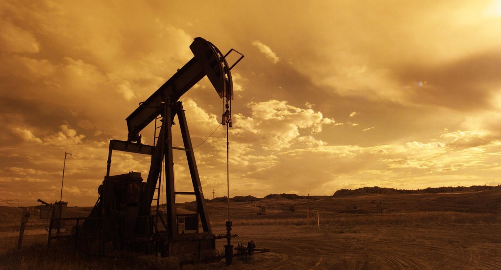

Learn More
üõ†Ô∏è What We Do
üíπ Commodities & Trade.
- Gold & Precious Metals.
- Foreign Exchange (Forex).
- Fabrics & Textiles.
üåæ Agriculture & Processing
Sowing innovation. Harvesting value.
- Rice Cultivation & Milling
- Cassava Production & Processing.
- Integrated Poultry Operations
- Palm Oil Value Chain
ü߆ Consultancy & Contracts
Expertise that connects vision with execution:
- Technology Transfer Initiatives
- ICT related Issues
- Public & Private Sector Contracts
üî• Oil and Gas.
Specializing in facilitating high-volume Petroleum Product transactions
üí° Core Values
-
Integrity:
We operate with transparency, fairness, and accountability. -
Excellence:
Good enough isn’t good enough—we set benchmarks and exceed them. -
Innovation:
Tomorrow’s challenges demand forward thinking today. -
Partnership:
We believe impact is exponential when we grow together. -
Sustainability:
Every solution is rooted in responsibility to people and planet.